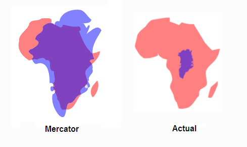
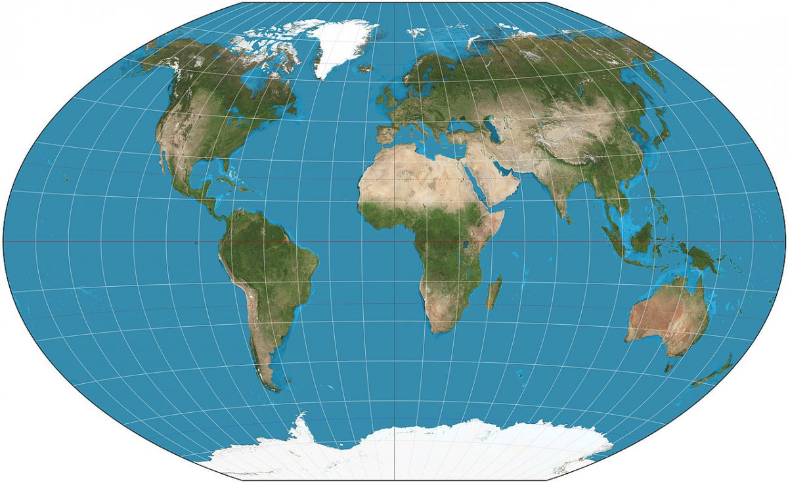
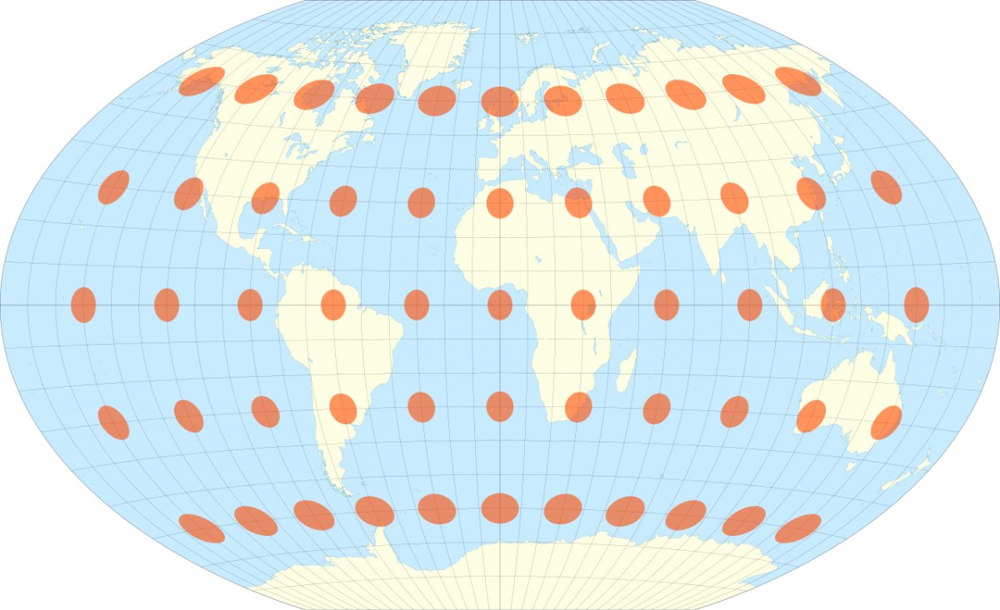
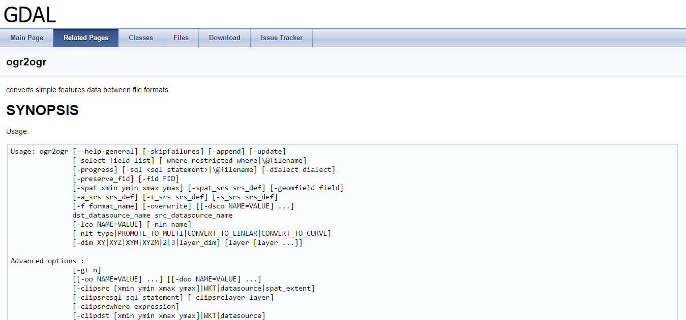
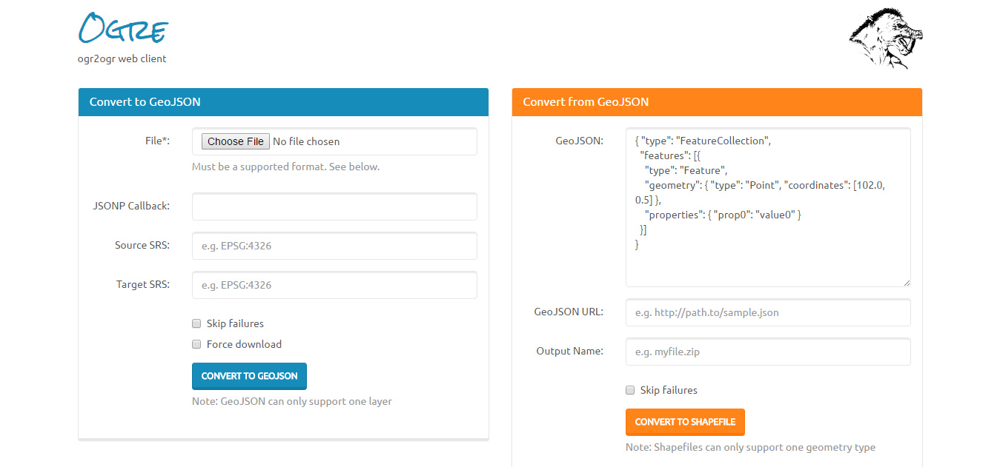
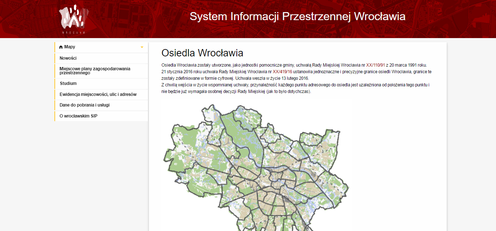

Maps and animations with d3.js
basic ideas to draw map and animate things!
Geoprojection
why so important?
mercator projection
srs code EPSG:3857
-
Scale is the same in all directions.
(A mile along a road should look the same length no matter which way the road is facing.) -
Angles are depicted accurately.
(If the map directs me to make what looks like a 90° left turn, or to bear right 30°, then that’s what I actually do.) -
A small real-life circle like the should be shown as a circle on the map, not squashed into an ellipse.
-
By convention, north should always point straight up.

Mercator projection distortion
   en.wikipedia.org/wiki/Winkel_tripel_projectionChoose right projection
...so close...
...Convert data
from shp to geojson
 www.gdal.org/ogr2ogr.htmlogr2ogr online
 ogre.adc4gis.comgeojson default projection - WGS84
Convert ETRS 1989 Poland CS2000 Zone 6 (EPSG:2177) to WGS84 (EPSG:4326) datum
 spatialreference.org/ref/epsg/etrs89-poland-cs2000-zone-6First map - world
var width = 960,
height = 500;
var projection = d3.geoWinkel3()
.scale((width + 1) / 2 / Math.PI)
.translate([width / 2, height / 2])
.precision(.1);
var graticule = d3.geoGraticule();
var path = d3.geoPath()
.projection(projection);
var svg = d3.select('#first-map-world').append('svg')
.attr('width', width)
.attr('height', height);
var container; = svg.append('g');
d3.json('/assets/data/world-110m.json', function(error, world) {
if (error) throw error;
svg.append('defs')
.append('path')
.datum({type: 'Sphere'})
.attr('id', 'worldLayer')
.attr('d', path);
container.append('use')
.attr('class', 'stroke')
.attr('xlink:href', '#worldLayer');
container.append('use')
.attr('class', 'fill')
.attr('xlink:href', '#worldLayer');
container.append('path')
.datum(graticule)
.attr('class', 'graticule')
.attr('d', path);
container.insert('path', '.world')
.datum(topojson.feature(world, world.objects.land))
.attr('class', 'land')
.attr('d', path);
});
Zoom and drag behavior
var width = 960,
height = 500;
var projection = d3.geoWinkel3()
.scale((width + 1) / 2 / Math.PI)
.translate([width / 2, height / 2])
.precision(.1);
var graticule = d3.geoGraticule();
var path = d3.geoPath()
.projection(projection);
var zoom = d3.zoom()
.scaleExtent([0.5, 10])
.on('zoom', zoomed);
var svg = d3.select('#first-map-world-zoom').append('svg')
.attr('width', width)
.attr('height', height)
.call(zoom);
var container = svg.append('g');
d3.json('/assets/data/world-110m.json', function(error, world) {
if (error) throw error;
svg.append('defs')
.append('path')
.datum({type: 'Sphere'})
.attr('id', 'worldLayer')
.attr('d', path);
container.append('use')
.attr('class', 'stroke')
.attr('xlink:href', '#worldLayer');
container.append('use')
.attr('class', 'fill')
.attr('xlink:href', '#worldLayer');
container.append('path')
.datum(graticule)
.attr('class', 'graticule')
.attr('d', path);
container.insert('path', '.world')
.datum(topojson.feature(world, world.objects.land))
.attr('class', 'land')
.attr('d', path);
});
Load data from json&csv with queue
var width = 960,
height = 500;
var centered;
var projection = d3.geoWinkel3()
.scale((width + 1) / 2 / Math.PI)
.translate([width / 2, height / 2])
.precision(.1);
var graticule = d3.geoGraticule();
var path = d3.geoPath()
.projection(projection);
var zoom = d3.zoom()
.scaleExtent([0.5, 10])
.on('zoom', zoomed);
var svg = d3.select('#first-map-world-queue').append('svg')
.attr('width', width)
.attr('height', height)
.call(zoom);
var container = svg.append('g');
d3.queue()
.defer(d3.json, '/assets/data/world-110m.json')
.defer(d3.csv, '/assets/data/countrycodes.csv')
.await(makeMap);
function makeMap(err, world, countries) {
if (err) {
return console.log('err', err);
}
svg.append('defs')
.append('path')
.datum({type: 'Sphere'})
.attr('id', 'worldLayer')
.attr('d', path);
container.append('use')
.attr('class', 'stroke')
.attr('xlink:href', '#worldLayer');
container.append('use')
.attr('class', 'fill')
.attr('xlink:href', '#worldLayer');
container.append('path')
.datum(graticule)
.attr('class', 'graticule')
.attr('d', path);
container.selectAll('.country')
.data(topojson.feature(world, world.objects.countries).features)
.enter()
.append('path')
.attr('class', 'country')
.attr('d', path)
.on('mouseover', (d) => {
let country = countries.filter((country) => (parseInt(country.isonum, 10) === d.id));
console.log('country:', country.length ? `${country[0].iso3} - ${country[0].country}` : '');
})
.on('click', (d) => {
var x, y, k;
if (d && centered !== d) {
var centroid = path.centroid(d);
x = centroid[0];
y = centroid[1];
k = 4;
centered = d;
} else {
x = width / 2;
y = height / 2;
k = 1;
centered = null;
}
container.selectAll('path')
.classed('active', centered && function(d) { return d === centered; });
container.transition()
.duration(750)
.attr('transform', 'translate(' + width / 2 + ',' + height / 2 + ') scale(' + k + ') translate(' + -x + ',' + -y + ')')
.style('stroke-width', 1.5 / k + 'px');
});
}
Visualize simple points
var width = 960,
height = 500;
var center = [19.433036923499714, 52.10849565486152];
var scale = 3025.2770864882386;
var projection = d3.geoMercator()
.center(center)
.scale(scale);
var path = d3.geoPath()
.projection(projection);
var svg = d3.select("#visualize-data-points").append("svg")
.attr("width", width)
.attr("height", height);
d3.queue()
.defer(d3.json, '/assets/data/pol_adm1_1.geo.json')
.defer(d3.csv, 'assets/data/miasta.csv')
.await(makeMap);
function makeMap(error, geojson, cities) {
if (error) {
return console.log('error:', error);
}
var populationRange = {
min: d3.min(cities.map(function(city) {
return parseInt(city.population, 10);
})),
max: d3.max(cities.map(function(city) {
return parseInt(city.population, 10);
}))
};
var fill = d3.scaleLinear()
.domain([populationRange.min, populationRange.max])
.range(['#2ecc71', '#e74c3c']);
var size = d3.scaleLinear()
.domain([populationRange.min, populationRange.max])
.nice()
.range([5, 15]);
var defs = svg.append('defs');
defs.append('path')
.attr('id', 'land')
.datum(geojson)
.attr('d', path);
svg.append('g')
.selectAll('path')
.data(geojson.features)
.enter()
.append('path')
.attr('d', path)
.style('fill', '#ecf0f1')
.style('stroke', '#7f8c8d');
svg.append('g')
.selectAll('point')
.data(cities)
.enter()
.append('circle')
.attr('class', 'city')
.attr('opacity', '0')
.attr('cx', function(d) {
return projection(center)[0];// + d3.randomUniform(-10, 10)() * 20;
})
.attr('cy', function(d) {
return projection(center)[1];// + d3.randomUniform(-10, 10)() * 20;
})
.attr('r', '1')
.transition()
.duration(1200)
.ease(d3.easeBounceOut)
.delay(function(d, i) { return i * 10; })
.attr('opacity', '1')
.attr('cx', function(d) {
return projection([d.lng, d.lat])[0];
})
.attr('cy', function(d) {
return projection([d.lng, d.lat])[1];
})
.attr('r', function(d) {
return size(d.population) + 'px';
})
.attr('fill', function(d) {
return fill(d.population);
});
}
Choropleth
Voronoi
Commits FE vs BE
D3.js as overlay for leaflet
var urls = {
osm: 'http://{s}.tile.openstreetmap.org/{z}/{x}/{y}.png',
mapbox: 'https://api.mapbox.com/styles/v1/amortka/ciw33sivg00i42jscelq5xf5m/tiles/256/{z}/{x}/{y}?access_token=pk.eyJ1IjoiYW1vcnRrYSIsImEiOiJjaW56azMwZW4wMHU0dnhseTJmdmd5MnNvIn0.ETjQqiTTrYueBpf8_aiOhg'
};
var width = 960,
height = 500;
var n = 0;
var mapEl = d3.select('#d3-leaflet-start').append('div')
.style('width', width + 'px')
.style('height', height + 'px');
var map = L.map(mapEl.node()).setView([0, 0], 2);
L.tileLayer(
urls.mapbox, {
attribution: '© OpenStreetMap Contributors',
maxZoom: 18,
}).addTo(map);
map._initPathRoot();
var transform = d3.geoTransform({point: projectPoint});
var path = d3.geoPath().projection(transform);
var svg = d3.select(mapEl.node()).select('svg');
var g = svg.append('g');
var points = g.selectAll('circle');
var trans = d3.transition()
.duration(250)
.ease(d3.easePolyInOut);
var cities = [];
d3.csv('/assets/data/geocode.csv', function(err, locations) {
if (err) {
return console.log('err', err);
}
map.on('viewreset', update);
update();
var t = setInterval(function() {
if (n < locations.length) {
cities.push(locations[n]);
points = g.selectAll('circle')
.data(cities);
points.exit().remove();
points
.data(cities)
.enter()
.append('circle')
.style('stroke', '#e74c3c')
.style('opacity', 1)
.style('fill', 'none')
.attr('r', 1)
.attr('stroke-opacity', 1)
.attr('stroke-width', 3)
.attr('transform',
function(d) {
return 'translate(' + map.latLngToLayerPoint([d.latitude, d.longitude]).x + ',' + map.latLngToLayerPoint([d.latitude, d.longitude]).y + ')';
}
)
.transition()
.duration(750)
.ease(d3.easePolyInOut)
.attr('r', 20)
.attr('stroke-opacity', 0.1)
.attr('stroke-width', 1)
.on('end', function repeat() {
d3.select(this)
.attr('r', 0)
.attr('stroke-opacity', 1)
.attr('stroke-width', 3)
.transition()
.duration(750)
.ease(d3.easeQuadIn)
.attr('r', 20)
.attr('stroke-opacity', 0.1)
.attr('stroke-width', 1)
.on('end', repeat);
});
n++;
} else {
clearInterval(t);
console.log('stop!');
}
}, 500);
});
function update() {
points.attr('transform',
function(d) {
return 'translate(' + map.latLngToLayerPoint([d.latitude, d.longitude]).x + ',' + map.latLngToLayerPoint([d.latitude, d.longitude]).y + ')';
}
)
}
function projectPoint(x, y) {
var point = map.latLngToLayerPoint(new L.LatLng(y, x));
this.stream.point(point.x, point.y);
}
D3.js path as overlay for leaflet
var urls = {
osm: 'http://{s}.tile.openstreetmap.org/{z}/{x}/{y}.png',
mapbox: 'https://api.mapbox.com/styles/v1/amortka/ciw33sivg00i42jscelq5xf5m/tiles/256/{z}/{x}/{y}?access_token=pk.eyJ1IjoiYW1vcnRrYSIsImEiOiJjaW56azMwZW4wMHU0dnhseTJmdmd5MnNvIn0.ETjQqiTTrYueBpf8_aiOhg'
};
var width = 960,
height = 500;
console.log('moduleD3LeafletPath init()');
var color = d3.scaleLog()
.range(['rgba(52, 152, 219,1.0)', 'rgba(231, 76, 60,1.0)'])
.interpolate(d3.interpolateHcl);
var mapEl = document.createElement('div');
mapEl.id='d3-leaflet-path-map';
document.getElementById('d3-leaflet-path').appendChild(mapEl);
var map = new L.Map('d3-leaflet-path-map', {center: [37.8, -96.9], zoom: 4})
.addLayer(new L.TileLayer('http://{s}.tile.openstreetmap.org/{z}/{x}/{y}.png'));
var svg = d3.select(map.getPanes().overlayPane).append('svg'),
g = svg.append('g').attr('class', 'leaflet-zoom-hide');
var info = L.control();
info.onAdd = function (map) {
this._div = L.DomUtil.create('div', 'info');
this.update();
return this._div;
};
info.update = function (props) {
console.log('props', props);
this._div.innerHTML = 'US state:
' + (props ? `${props.state}: ${props.density} people/mi2` : '- select some state -');
};
info.addTo(map);
d3.json('/assets/data/us-states.density.geo.json', function(error, collection) {
if (error) throw error;
var densities = collection.features.map((feature) => {
return feature.properties.density;
}).sort(function(a, b) { return a - b; });
color.domain([densities[0], densities.slice(-1)[0]]);
var transform = d3.geoTransform({point: projectPoint}),
path = d3.geoPath().projection(transform);
var feature = g.selectAll('path')
.data(collection.features)
.enter()
.append('path')
.attr('class', 'state')
.style('fill', function(d) {
return color(d.properties.density);
})
.on('mouseover', (d) => {
info.update({state: d.properties.name, density: d.properties.density})
})
.on('mouseout', () => {
info.update()
});
map.on('viewreset', reset);
reset();
function reset() {
var bounds = path.bounds(collection),
topLeft = bounds[0],
bottomRight = bounds[1];
svg.attr('width', bottomRight[0] - topLeft[0])
.attr('height', bottomRight[1] - topLeft[1])
.style('left', topLeft[0] + 'px')
.style('top', topLeft[1] + 'px');
g.attr('transform', 'translate(' + -topLeft[0] + ',' + -topLeft[1] + ')');
feature.attr('d', path);
}
function projectPoint(x, y) {
var point = map.latLngToLayerPoint(new L.LatLng(y, x));
this.stream.point(point.x, point.y);
}
});
Leaflet+clip path
var width = 960,
height = 500;
var container;
var center = [19.433036923499714, 52.10849565486152];
var scale = 3025.2770864882386;
var projection = d3.geoMercator()
.center(center)
.scale(scale);
var path = d3.geoPath()
.projection(projection);
var tile = d3.geoTile()
.scale(projection.scale() * 2 * Math.PI)
.translate(projection([0, 0]))
.zoomDelta(1);
var svg = d3.select('#d3-leaflet-clip').append('svg')
.attr('width', width)
.attr('height', height);
var init = function() {
d3.json('/assets/data/pol_adm1_1.geo.json', function(error, geojson) {
if (error) throw error;
var tiles = tile();
var defs = svg.append('defs');
defs.append('path')
.attr('id', 'land')
.datum(geojson)
.attr('d', path);
defs.append('clipPath')
.attr('id', 'clip')
.append('use')
.attr('xlink:href', '#land');
container = svg.append('g')
.attr('clip-path', 'url(#clip)')
.selectAll('image')
.data(tiles)
.enter().append('image')
.attr('xlink:href', function(d) {
return 'http://' + ['a', 'b'][Math.random() * 2 | 0] + '.tile.thunderforest.com/landscape/' + d[2] + '/' + d[0] + '/' + d[1] + '.png?apikey=f6edb1815e5d47eba0dac809df4a7641';
})
.attr('width', Math.round(tiles.scale))
.attr('height', Math.round(tiles.scale))
.attr('x', function(d) {
return Math.round((d[0] + tiles.translate[0]) * tiles.scale);
})
.attr('y', function(d) {
return Math.round((d[1] + tiles.translate[1]) * tiles.scale);
});
svg.append('g')
.selectAll('path')
.data(geojson.features)
.enter().append('path')
.attr('d', path)
.style('fill', 'none')
.style('stroke', '#000');
});
d3.js v3 vs v4
modularity
<script src="assets/js/lib/d3.min.js"></script>
<script src="assets/js/lib/d3-selection.v1.min.js"></script>
<script src="assets/js/lib/d3-request.v1.min.js"></script>
<script src="assets/js/lib/d3-array.v1.min.js"></script>
<script src="assets/js/lib/d3-transition.v1.min.js"></script>
<script src="assets/js/lib/d3-geo.v1.min.js"></script>
<script src="assets/js/lib/d3-geo-projection.v1.min.js"></script>
<script src="assets/js/lib/d3-ease.v1.min.js"></script>
<script src="assets/js/lib/d3.geo.tile.min.js"></script>
d3 scale can be installed with:
npm install d3-scale
d3.js v3 vs v4
modularity
load all and forget
<script src="https://d3js.org/d3.v4.js"></script>
d3.js v3 vs v4
modularity
d3-bundler
npm install -g d3-bundler
export {
event,
select,
selectAll
} from "d3-selection";
d3-bundler -o d3.js -- index.jsnpm install -g uglify-js
d3-bundler -o d3.js -- index.js && uglifyjs -c -m -o d3.min.js -- d3.jsd3.js v3 vs v4
flat namespace
D3 v3's API had separated namespace. For example:
d3.scale.linear
d3.scale.ordinal
d3.time.format
d3.svg.axis
d3.geo.path
In D3 v4, all modules share a flat namespace d3.* as a result of adopting ES6 modules.
d3.scale.linear -> d3.scaleLinear
d3.geo.path -> d3.geoPath